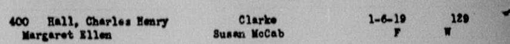

Robert H. Elfsten d. 1987
Husband of Peter's great-aunt Margaret Hall.
Also recorded as Robert H Elfstare (1938 marriage index).
Robert H. Elfsten. He married Margaret Hall on 24 Sep 1938 in Washington, United States2. He died in Mar 1987 in California, United States1.
Family
- Wife
- Margaret Hall 1919–1978 · married on 24 Sep 1938 in Washington, United States2
- Children
- Patricia Elfsten b. 1940 documented
- Charles A. Elfsten b. 1943 documented
Life events
| Event | Date | Place and details |
|---|---|---|
| Married | 24 Sep 1938 | with Margaret Hall Washington, United States2 |
| Died | Mar 1987 | California, United States1 |
Records



Sources
- Robert Elfsten: Social Security Death Index (SSDI) Death Record; and Obituary: Donald E. Elfsten, 87, The Coeur d'Alene Press (Coeur d'Alene, Idaho), 29 December 2007.
Name: Robert Elfsten State of Issue: Oregon Date of Birth: Friday July 05, 1918 Date of Death: March 1987 Est. Age at Death: 68 years, 8 months Last known residence: City: Folsom; Lake Natoma; Mormon Island; Pine Bluff; White Rock County: Sacramento State: California ZIP Code: 95630
Social Security Death Index record: Robert Elfsten, born 5 July 1918 (in Coeur d'Alene, Idaho, son of Arthur J. Elfsten and Hattie Swanson Elfsten per his brother Donald E. Elfsten's 29 December 2007 Coeur d'Alene Press obituary), died March 1987 (age 68 years, 8 months); SSN issued in Oregon; last known residence ZIP 95630 (Folsom / Lake Natoma / Mormon Island / Pine Bluff / White Rock, Sacramento County, California).
- Birth index D9PK-3D6Z; marriage return QP9S-77KX.
Robert H Elfstare and Margaret E Hall … Marriage 24 September 1938, North Bonneville, Skamania, Washington, United States
To Robert H. Elfsten (indexed 'Robert H Elfstare'), 22, born c. 1916, son of Arthur Elfstare and Hattie Sevaneson. She was 20 (born c. 1918), daughter of Chas Hall and Susan McCabe.